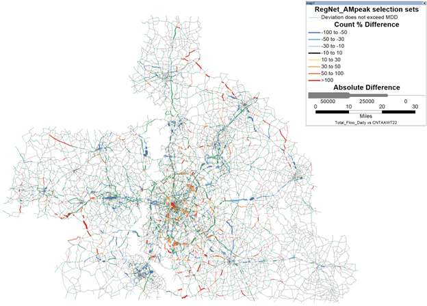

In addition to the calibration checks performed for each submodel, where model performance is compared back to the survey used to estimate it, the final results are also compared to independent data sources not used in estimation. This is the validation set. Caliper used traffic counts and observed transit ridership to validate that the estimated models did a good job predicting conditions in 2022 (the base year).
The table below shows the model link volumes compared to traffic counts by volume group. Percent difference and percent root mean square error (%RMSE) all look great. While the percent difference for the 100000+ category looks low, there are only 2 counts and low volume. This means that even small differences look larger in percentage terms.
| Volume Group | N | Total Count | Total Volume | Percent Difference | PRMSE |
|---|---|---|---|---|---|
| 1,0000 | 2,063 | 9,051,500 | 9,284,533 | 2.57 | 56.19 |
| 25,000 | 1,161 | 18,626,300 | 17,149,797 | -7.93 | 29.98 |
| 50,000 | 469 | 16,041,100 | 15,547,126 | -3.08 | 22.54 |
| 100,000 | 146 | 9,764,300 | 9,637,426 | -1.30 | 14.66 |
| 100,000+ | 2 | 205,200 | 176,706 | -13.89 | 13.89 |
| All | 3,841 | 53,688,400 | 51,795,589 | -3.53 | 33.00 |
In the next table, link volumes are compared to counts by facility type. The model is predicting lower volumes on facility type C than observed. Given the strong performance by volume group, Caliper did not deem this a problem, but future enhancements could look into this facility type.
| Facility Type | N | Total Count | Total Volume | Percent Difference | PRMSE |
|---|---|---|---|---|---|
| Divided - left turn bays | 304 | 8,081,500 | 8,160,430 | 0.98 | 26.83 |
| Undivided - continuous left | 304 | 5,428,200 | 4,477,111 | -17.52 | 34.93 |
| Divided - no median breaks | 48 | 1,215,100 | 1,144,579 | -5.80 | 28.38 |
| Expressway | 19 | 486,800 | 426,668 | -12.35 | 20.15 |
| Freeway | 306 | 14,786,100 | 14,728,504 | -0.39 | 15.81 |
| Divided - median breaks only | 49 | 997,800 | 996,695 | -0.11 | 25.55 |
| Ramp | 2 | 36,800 | 32,254 | -12.35 | 12.38 |
| Undivided - left turn bays | 271 | 5,251,800 | 5,289,483 | 0.72 | 28.63 |
| Undivided - no left provision | 2,538 | 17,404,300 | 16,539,864 | -4.97 | 44.74 |
| All | 3,841 | 53,688,400 | 51,795,589 | -3.53 | 33.00 |
In addition to these summary-level validation checks, Caliper also checked for link level differences using the maps shown below.

The table below shows observed unlinked transit boardings compared to the model. The model is matching the observed data well.
| Mode | Observed | Model |
|---|---|---|
| Bus | 28,000 | 30,000 |
| Rail | 16,000 | 16,000 |